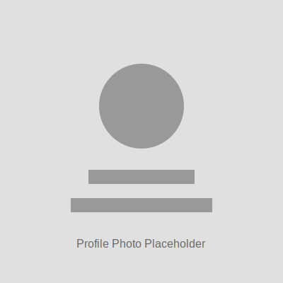

|
Aarav Sinha
I'm a high school student passionate about computational neuroscience, artificial intelligence, and machine learning. I focus on understanding brain function through computational modeling, particularly studying the Drosophila connectome and neural dynamics.
Currently, I'm an intern at Eon Systems PBC researching connectome-constrained neural networks for controlling embodied Drosophila models. I'm also working with Johns Hopkins University on predictive grid cells in the MEC neuron subpopulation. I'm developing NeuroBridge, an AI learning platform to make AI/ML education accessible to underserved students.
Email /
Phone: 346-327-6617 /
CV /
Github /
LinkedIn
|

|
Education & Certifications
High School Student - Top 5 ranked in class by GPA
Online Certifications:
- Harvard MCB80x: Fundamentals of Neuroscience, Parts 1–3
- DeepLearning.AI: Machine Learning Specialization (Andrew Ng)
- MIT OpenCourseWare - Introduction to Neural Computation
- Mathematics for Machine Learning (Coursera, in progress)
|
|
Intern at Eon Systems PBC
• Researching controlling embodied drosophila models with connectome-constrained neural networks
• Designing dynamic environments and training models in a variety of ways to exhibit biologically accurate behavior
• Planning on submitting project to ISEF and other competitions
|
|
Research Intern @ Johns Hopkins University
• Researching the function of predictive grid cells through computationally simulating the MEC neuron subpopulation
|
|
Drosophila Brain Connectome Modeling
• Simulated functional neural dynamics in Drosophila based on structural connectome data in Brian2, a Python library
• Implemented neuromodulation, better simulation of inhibitory dynamics (changing the zero-basal-firing-rate), and SDTP to explore mechanisms of learning
• Recreated model structures from published papers (e.g., connectome-constrained vision models) and attempted to improve them
• Simulated real-world dynamic odor perception through the Drosophila model, improving on current static odor prediction models
• Extending this work as an intern at Eon Systems PBC
|
|
Drosophila Brain Connectome Modeling
Worked on a research project at Harvard University during the summer of 2025 with Satpreet Singh, PhD, exploring plume-tracking RNN agents in multi-plume situations, and analyzing the effects on emergent agent behavior and neural dynamics. Published in NeurIPS AI4Science Workshop
|
NeuroBridge - AI Learning Platform
React, TypeScript, TailwindCSS, TensorFlow.js, Konva, Recoil
• Developing a gamified, neurodivergent-friendly drag-and-drop platform to teach AI/ML fundamentals to underserved students
• Features include visual neural network simulations, interactive modules (classification games, image recognition tasks), and no-code model editing
• Uses real-time inference with TensorFlow.js, interactive canvas rendering with Konva, and scalable state management with Recoil
|
|
Past Research Projects
• University of Pennsylvania: Explored how optimization principles from the human visual cortex can improve image detection algorithms in artificial systems [ENDED]
• UC Davis: Assisted in a computational neuroscience project examining how dopamine modulates cognitive flexibility in tasks involving selective working memory and reward-based decision-making [ENDED]
|
AI/ML Specialization Projects
Over the last year
• Built a neural network to predict delivery demand for real-world datasets
• Built a neural network to predict wildfire spread during the wildfire season in California
• Created an AI Chatbot that school counselors use regularly to help students with course selection
• Built a program that uses LLMs to generate Science Olympiad practice questions
|
Skills
Programming and Software: Proficient in coding with PyTorch and TensorFlow. Skilled in using libraries such as Pandas, Matplotlib, and Seaborn for data analysis and visualization. Proficient in Java.
Neuroscience: Proficient in using Brian2 for neural modeling. Well-versed in connectomics and statistical analysis of connectomes.
Personal Qualities: Very reliable, hardworking, and persistent. Ask for help when needed but mostly self-sufficient.
|
Awards & Leadership
- TMSCA: 1st place in State (Science)
- Science Olympiad: Top 10 @ MIT Invitational (top national invitational), 1st place at regionals, 3 top 5 finishes at the State tournament (in Dynamic Planet, Eco, and Geo Mapping)
- Tompkins Symphony Orchestra: Member of the #1 full orchestra in Texas, participated in the Midwest Conference and TMEA (prestigious national and state-level orchestra conferences)
- AI Club Founder: Established an AI club at my school offering free education on AI. Grew it to 40 members in one year. Planning to host our own AI Competition and the regional round of US AI Olympiad next year
- Songham Taekwondo: Green belt - projected to become Black Belt in 8 months
- Academic Achievement: Top 5 ranked in my class by GPA
|
|
{kind=link}